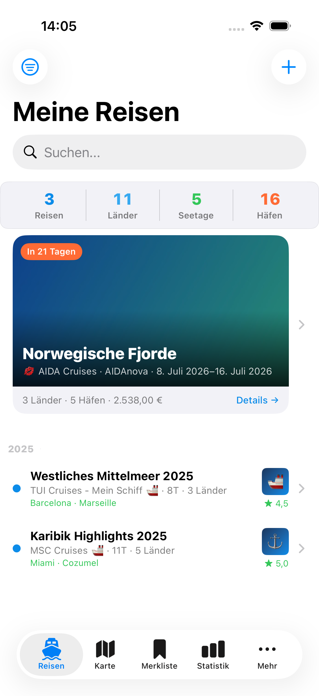

In 21 Tagen
Norwegische Fjorde
AIDAnova · 8.–16. Juli · Bergen, Geiranger, Stavanger
5 Häfen · 3 Länder
Dieses HTML-Mockup zeigt eine konkrete visuelle Richtung: ruhiger, fotozentrierter, weniger Formular, mehr Erinnerungswert. Die bestehenden Daten bleiben die Basis, aber die App erzählt sie wie ein hochwertiges Journal.
3 Reisen · 11 Länder · nächste Reise in 21 Tagen
AIDAnova · 8.–16. Juli · Bergen, Geiranger, Stavanger
Die Detailansicht ist der wichtigste Premium-Hebel: Sie muss sich wie ein Album anfühlen. Praktische Daten bleiben da, rutschen aber unter die emotionalen Inhalte.
AIDAnova · 8 Tage · 5 Häfen
Norwegische Fjorde · 8 Tage · 5 Häfen
Geiranger war der schönste Moment der Reise. Ruhiges Wasser, Nebel über den Bergen, sehr gute Sicht vom Oberdeck.
Norwegische Fjorde
Der Qualitätsbruch entsteht heute vor allem in den Nebenbereichen. Diese Screens zeigen, wie sie zur gleichen App-Familie werden.
Dein persönliches Kreuzfahrt-Archiv
Du warst bisher über fünf Wochen auf See und hast 11 Länder besucht.
Gespeicherte Reisen, Preise und Ideen
Mein Schiff 5 · 7 Nächte · Januar 2027
Archiv, Komfort und Premium-Funktionen
3 Reisen lokal gesichert · iCloud Sync bereit für Premium
Diese Regeln halten die App zusammen, wenn die Screens später in SwiftUI gebaut werden.
Die aktuelle Hauptansicht ist schon stark. Das Ziel ist, diesen Premium-Ton auf Detail, Karte, Bilanz, Wunschreisen und Mehr zu übertragen.

Nicht alles neu machen. Die bestehende Hero-/Timeline-Idee wird zur Sprache der ganzen App: Album, Logbuch, Bilanz, Wunschreisen.